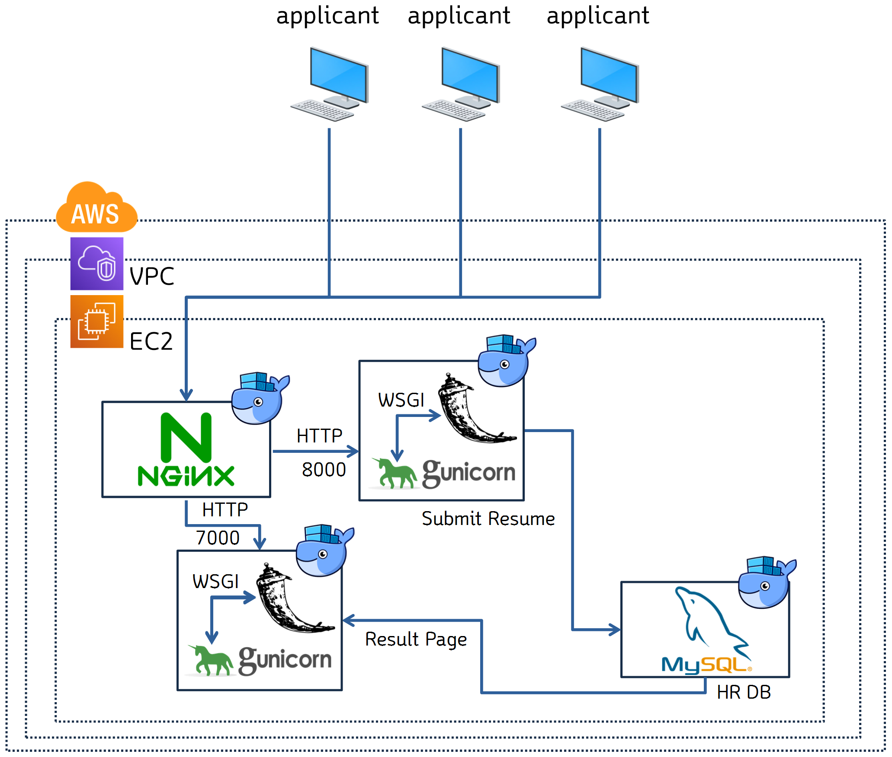

2021-Toy-1
Tip
💡 유형 : 개인 토이 프로젝트
목표
- 여태 학습해왔던 각종 기술들을 실제로 활용해본 경험을 가져보고 문제해결 능력을 키우기 간단한 인프라를 구축해보고 싶었습니다
서비스 요약
- 인력풀에 지원자를 등록할 수 있는 서비스를 도커를 활용한 멀티컨테이너 인프라를 적용하여 구성하였습니다
구성도
-
Service Flow

-
DEV Flow

-
AWS 인프라 구성도

각 기술들의 선택 이유
- 본 프로젝트는 서비스가 원활하게 동작할 수 있는 인프라를 구성하는데 중점을 두고있습니다. 프로그래밍을 최소화 하기 위해 잘 다룰 수 있는 언어인 Python을 사용하고, 빠르게 웹 서비스를 구동할 수 있는 Flask 프레임워크를 이용했습니다.
- CICD 솔루션으로 Cloudbase + public repository 무료 + multi container 사용가능 조건을 맞춰줄 수 있는 Travis CI를 채택하였습니다 https://djangostars.com/blog/continuous-integration-circleci-vs-travisci-vs-jenkins/
- Apache와 Nginx중 비동기를 이용해 많은 동시접속 트래픽이 수용가능한 Nginx를 선택하였습니다 https://kinsta.com/blog/nginx-vs-apache/
-
Flask의 기본 내장서버는 대용량처리에 부적합하기 때문에 WSGI를 적용했습니다

-
WSGI구현에 gunicorn을 사용하였습니다
- DB생성 후 스키마를 변경할 일이 없기 떄문에 SQL을 사용하는데, 추후 RDS로 마이그레이션도 가능한 MySQL을 사용하였습니다
- 멀티컨테이너용 Beanstalk보단 추후 커스텀이 자유로운 EC2 서비스를 선택하였습니다
- fault tolerance알고리즘을 위해 EC2 인스턴스 수는 홀수로 구성하였습니다 https://docs.docker.com/engine/swarm/admin_guide/
에러 수정 기록
- Docker에서 Flask 서버를 띄울 때 Host주소는 0.0.0.0
- wsgi용 파이썬 파일을 별도로 분리하고 포트 할당하기
- 최신 uWSGI는 musl을 사용하기 때문에 https://stackoverflow.com/questions/36217250/cannot-install-uwsgi-on-alpine https://github.com/gliderlabs/docker-alpine/issues/158 RUN apk add python3-dev build-base linux-headers pcre-dev 명령을 추가합니다
- 이유없이 뭔가 잘 안되면 일단 YAML 띄어쓰기부터 확인
- Nginx 라우팅 설정시 URI 마지막에 / 추가 https://askubuntu.com/questions/1173951/all-routes-except-return-404-from-nginx-running-flask-wsgi
- EC2 인스턴스에 까먹지 말고 사용자 데이터 명시할 것 user_data 사용시 terraform init 다시 해야 함
- EC2 인스턴스에 자동으로 CodeDeploy Agent 설치하려면 CodeDeploy 접근가능 역할을 먼저 부여할 것
-
오류 해결을 위해 이것 저것 해보느라 몇 시간 까지 걸리는 것은 당연한 것..

-
유저데이터에 프로그램 설치 명령을 넣으면 당연히 설치 될 때 까지 기다려야 합니다

-
HTTP랑 HTTPS랑 헷갈리지 말것ㅜㅜㅜㅜ(제일 어이 없던 부분)
- HTML은 잘 나오지만 CSS, JS 로드가 안되면 Nginx 설정 문제
- 정적컨텐츠 s3 호스팅을 위한 이동으로 cp //.css *//*.js ./deploy 이런것도 가능
- S3에 static resource 분리할 때 public access 권한 점검하기
- S3 버킷정책 만들 때 리소스에 /* 붙이기https://stackoverflow.com/questions/44228422/s3-bucket-action-doesnt-apply-to-any-resources
- 테라폼에서 보안그룹 스스로를 소스로 사용하려면 ID를 넣지 말고 self = true 이용하기 https://stackoverflow.com/questions/49995417/self-reference-not-allowed-in-security-group-definition
- 오케스트레이션 구축할 떄 퍼블릭 IP 말고 프라이빗 IP로 구축
- EC2 프라이빗 IP 가져오기⭐
- /sbin/ifconfig eth0 | grep 'inet' | cut -d: -f2 | awk '{print $2}'
- hostname -i
- 진자템플릿 사용시 대소문자 구분 필수(특히 메소드 부분)
-
Nginx에서 바로 POST 메소드를 사용할경우 리다이렉션 발생
→ https://stackoverflow.com/questions/27795068/nginx-rewrite-post-data
-
Apply서버에 POST, Result서버에 GET 방식을 적용했습니다
- 깃 브랜치로 관리할 떄 테라폼 엉망이 되지 않도록 주의하기
- 도커스웜은 도커컴포즈파일을 스택으로 이용해 구동 가능https://docs.docker.com/engine/swarm/stack-deploy/
-
도커스택 구동시 컨테이너 실행자체가 문제일 경우 컴포즈를 한 번 돌려보면 실마리를 찾을 수 있습니다

-
RDS가 프라이빗 서브넷에 존재하면 Travis에서 코드테스트를 진행할 때 RDS에 접속실패하여 테스트 실패로 이어지는 것에 주의
-
MySQL 접속 커맨드
-
도커 스웜모드 에러 확인
→ docker service logs {SERVICE} 명령으로 로그 확인 가능

TODO
- IaC
- Terraform
- Terraform 고도화
- CICD
- Container(Dockerfile)
- Flask + gunicorn
- MySQL
- Nginx
- Docker Compose
- Travis CI
- CodeDeploy
- 배포 완료 후 구동 세팅
- EC2
- CI를 위한 테스트코드 작성
- Container(Dockerfile)
- Server
- HTML CSS 틀 만들기
- RDS, MySQL 연결
- 기능 제작
- Orchestration
- Swarm Mode
Part 1 - CICD
CodeDeploy(콘솔)
-
새로운 CodeDeploy 작업 생성

-
배포그룹 생성

-
태그를 이용해 EC2를 지정할 수 있습니다

-
AWS SM을 사용하지 않고 직접 CodeDeploy를 설치하였습니다

-
CodeDeploy에 배포 관련 설정을 진행합니다

EC2 배포 설정
-
CodeDeploy Agent 설치
-
Docker 설치
sudo yum -y install docker sudo systemctl start docker sudo systemctl enable docker sudo usermod -aG docker ec2-user권한 문제로 docker ps -a 명령이 불가능 할 경우
-
따라서 테라폼에 작성할 EC2 인스턴스의 사용자 데이터는 다음과 같습니다
<<-EOF #!/bin/bash aws s3 cp s3://aws-codedeploy-ap-northeast-2/latest/install . --region ap-northeast-2 sudo yum install -y ruby wget git chmod +x ./install sudo ./install auto sudo service codedeploy-agent start sudo yum -y install docker sudo systemctl start docker sudo systemctl enable docker sudo usermod -aG docker ec2-user sudo chmod 666 /var/run/docker.sock sudo curl -L "https://github.com/docker/compose/releases/download/1.28.5/docker-compose-$(uname -s)-$(uname -m)" -o /usr/local/bin/docker-compose sudo chmod +x /usr/local/bin/docker-compose EOF -
CICD를 위한 .travis.yml 작성
.travis.ymllanguage: generic services: - docker before_install: - docker build -t dotoryeee/test-submit-server -f ./flask-submit-server/Dockerfile ./flask-submit-server script: - docker run -e CI=true dotoryeee/test-submit-server python3 test.py after_success: - docker build -t dotoryeee/flask-submit-server ./flask-submit-server - docker build -t dotoryeee/flask-result-server ./flask-result-server - docker build -t dotoryeee/nginx ./nginx - echo "$DOCKER_HUB_PASSWORD" | docker login -u "$DOCKER_HUB_ID" --password-stdin - docker push dotoryeee/flask-submit-server - docker push dotoryeee/flask-result-server - docker push dotoryeee/nginx before_deploy: - zip -r myapp.zip ./* #CI 완료 후 모든 파일을 myapp.zip로 압축 - mkdir -p deploy # deploy 디렉터리 생성 - mv myapp.zip ./deploy #myapp.zip를 deploy 디렉터리로 이동 deploy: - provider: s3 access_key_id: $AWS_ACCESS_KEY secret_access_key: $AWS_SECRET_ACCESS_KEY bucket: dotoryeee-s3 region: ap-northeast-2 skip_cleanup: true #압축파일 삭제 방지 local_dir: deploy #deploy 디렉터리의 파일을 S3에 전송 wait-until-deployed: true on: branch: main - provider: codedeploy access_key_id: $AWS_ACCESS_KEY secret_access_key: $AWS_SECRET_ACCESS_KEY bucket: dotoryeee-s3 key: myapp.zip bundle_type: zip application: talentpool deployment_group: CICD-test region: ap-northeast-2 wait-until-deployed: true #AWS에 파일 전달 이후에도 에러 확인 가능 on: branch: main -
CodeDeploy 이후 작업 명시를 위한 appspec.yml 작성
-
서버에서 구동 위한 docker-compose-ec2.yml 작성
docker-compose-ec2.ymlversion: "3" services: flask-submit-server: image: dotoryeee/flask-submit-server restart: always container_name: flask-submit-server ports: - "8000:8000" command: gunicorn -w 1 -b 0.0.0.0:8000 wsgi:server flask-result-server: image: dotoryeee/flask-result-server restart: always container_name: flask-result-server ports: - "7000:7000" volumes: - ./flask-result-server:/usr/src/app command: gunicorn -w 1 -b 0.0.0.0:7000 wsgi:server nginx: image: dotoryeee/nginx container_name: nginx restart: always ports: - "80:80" #flask 컨테이너 로드가 끝나면 Nginx를 시작합니다 depends_on: - flask-submit-server - flask-result-server -
연동하여 서버 시작 명령이 명시된 execute-deploy 스크립트 작성
execute-deploy.sh#!/bin/bash sudo curl -L "https://github.com/docker/compose/releases/download/1.28.5/docker-compose-$(uname -s)-$(uname -m)" -o /usr/local/bin/docker-compose sudo chmod +x /usr/local/bin/docker-compose docker-compose -f /home/e2-user/app/docker-compose-ec2.yml rm -fs docker system prune -a -f docker-compose -f /home/e2-user/app/docker-compose-ec2.yml up
동작 확인
-
Terraform Apply를 이용해 인프라를 생성합니다
- Terraform Apply
An execution plan has been generated and is shown below. Resource actions are indicated with the following symbols: + create Terraform will perform the following actions: # aws_instance.public_01 will be created + resource "aws_instance" "public_01" { + ami = "ami-006e2f9fa7597680a" + arn = (known after apply) + associate_public_ip_address = (known after apply) + availability_zone = (known after apply) + cpu_core_count = (known after apply) + cpu_threads_per_core = (known after apply) + get_password_data = false + host_id = (known after apply) + iam_instance_profile = "EC2_role_for_codedeploy" + id = (known after apply) + instance_state = (known after apply) + instance_type = "t2.micro" + ipv6_address_count = (known after apply) + ipv6_addresses = (known after apply) + key_name = "dotoryeee" + outpost_arn = (known after apply) + password_data = (known after apply) + placement_group = (known after apply) + primary_network_interface_id = (known after apply) + private_dns = (known after apply) + private_ip = (known after apply) + public_dns = (known after apply) + public_ip = (known after apply) + secondary_private_ips = (known after apply) + security_groups = (known after apply) + source_dest_check = true + subnet_id = (known after apply) + tags = { + "Name" = "talentpool-webserver" } + tenancy = (known after apply) + user_data = "37dd0b56bc65486734172a29cc30def4180da21a" + vpc_security_group_ids = (known after apply) + ebs_block_device { + delete_on_termination = (known after apply) + device_name = (known after apply) + encrypted = (known after apply) + iops = (known after apply) + kms_key_id = (known after apply) + snapshot_id = (known after apply) + tags = (known after apply) + throughput = (known after apply) + volume_id = (known after apply) + volume_size = (known after apply) + volume_type = (known after apply) } + enclave_options { + enabled = (known after apply) } + ephemeral_block_device { + device_name = (known after apply) + no_device = (known after apply) + virtual_name = (known after apply) } + metadata_options { + http_endpoint = (known after apply) + http_put_response_hop_limit = (known after apply) + http_tokens = (known after apply) } + network_interface { + delete_on_termination = (known after apply) + device_index = (known after apply) + network_interface_id = (known after apply) } + root_block_device { + delete_on_termination = (known after apply) + device_name = (known after apply) + encrypted = (known after apply) + iops = (known after apply) + kms_key_id = (known after apply) + tags = (known after apply) + throughput = (known after apply) + volume_id = (known after apply) + volume_size = (known after apply) + volume_type = (known after apply) } } # aws_instance.public_02 will be created + resource "aws_instance" "public_02" { + ami = "ami-006e2f9fa7597680a" + arn = (known after apply) + associate_public_ip_address = (known after apply) + availability_zone = (known after apply) + cpu_core_count = (known after apply) + cpu_threads_per_core = (known after apply) + get_password_data = false + host_id = (known after apply) + iam_instance_profile = "EC2_role_for_codedeploy" + id = (known after apply) + instance_state = (known after apply) + instance_type = "t2.micro" + ipv6_address_count = (known after apply) + ipv6_addresses = (known after apply) + key_name = "dotoryeee" + outpost_arn = (known after apply) + password_data = (known after apply) + placement_group = (known after apply) + primary_network_interface_id = (known after apply) + private_dns = (known after apply) + private_ip = (known after apply) + public_dns = (known after apply) + public_ip = (known after apply) + secondary_private_ips = (known after apply) + security_groups = (known after apply) + source_dest_check = true + subnet_id = (known after apply) + tags = { + "Name" = "talentpool-webserver" } + tenancy = (known after apply) + user_data = "37dd0b56bc65486734172a29cc30def4180da21a" + vpc_security_group_ids = (known after apply) + ebs_block_device { + delete_on_termination = (known after apply) + device_name = (known after apply) + encrypted = (known after apply) + iops = (known after apply) + kms_key_id = (known after apply) + snapshot_id = (known after apply) + tags = (known after apply) + throughput = (known after apply) + volume_id = (known after apply) + volume_size = (known after apply) + volume_type = (known after apply) } + enclave_options { + enabled = (known after apply) } + ephemeral_block_device { + device_name = (known after apply) + no_device = (known after apply) + virtual_name = (known after apply) } + metadata_options { + http_endpoint = (known after apply) + http_put_response_hop_limit = (known after apply) + http_tokens = (known after apply) } + network_interface { + delete_on_termination = (known after apply) + device_index = (known after apply) + network_interface_id = (known after apply) } + root_block_device { + delete_on_termination = (known after apply) + device_name = (known after apply) + encrypted = (known after apply) + iops = (known after apply) + kms_key_id = (known after apply) + tags = (known after apply) + throughput = (known after apply) + volume_id = (known after apply) + volume_size = (known after apply) + volume_type = (known after apply) } } # aws_internet_gateway.main will be created + resource "aws_internet_gateway" "main" { + arn = (known after apply) + id = (known after apply) + owner_id = (known after apply) + tags = { + "Name" = "igw-talent-pool" } + vpc_id = (known after apply) } # aws_key_pair.dotoryeee will be created + resource "aws_key_pair" "dotoryeee" { + arn = (known after apply) + fingerprint = (known after apply) + id = (known after apply) + key_name = "dotoryeee" + key_pair_id = (known after apply) + public_key = "ssh-rsa AAAAB3NzaC1yc2EAAAADAQABAAABAQDD5D5mHSD/vdgcGmh6Kd57DqLxebcvbrUsHj8DYDW0+9MSvvK874Bm4hpqHliYze/ht7VnzL5+A5qZkCevKGBDeJNmR/QDHccCsCfRuyEmzMlvj3SxzYSH2N4lBG6eZZbQ+0yRl7ny3aeyol5boDkztLZ/PZwVR5IH6BgsNiGClSDtuf2CYoKN7hQufjeuCDcLlQa+ItFa4abMe/mWtMeEh7+ZpC+0KAFFvqY80OCtuUdqq7tcP8uHzQy9mPKvKBieJYitUoStjFEMAro1v34u6193Qgk6DAhyMom4GmLc2+tTyKMsvBlRKUOb87F+2zsATX3Ahz9cMpEkfPTkY15V dotoryeee@i5-6500" } # aws_route.default will be created + resource "aws_route" "default" { + destination_cidr_block = "0.0.0.0/0" + destination_prefix_list_id = (known after apply) + egress_only_gateway_id = (known after apply) + gateway_id = (known after apply) + id = (known after apply) + instance_id = (known after apply) + instance_owner_id = (known after apply) + local_gateway_id = (known after apply) + nat_gateway_id = (known after apply) + network_interface_id = (known after apply) + origin = (known after apply) + route_table_id = (known after apply) + state = (known after apply) } # aws_route_table.private will be created + resource "aws_route_table" "private" { + id = (known after apply) + owner_id = (known after apply) + propagating_vgws = (known after apply) + route = (known after apply) + tags = { + "Name" = "RT-private-talent-pool" } + vpc_id = (known after apply) } # aws_route_table.public will be created + resource "aws_route_table" "public" { + id = (known after apply) + owner_id = (known after apply) + propagating_vgws = (known after apply) + route = (known after apply) + tags = { + "Name" = "RT-public-talent-pool" } + vpc_id = (known after apply) } # aws_route_table_association.private-asso-2a will be created + resource "aws_route_table_association" "private-asso-2a" { + id = (known after apply) + route_table_id = (known after apply) + subnet_id = (known after apply) } # aws_route_table_association.private-asso-2c will be created + resource "aws_route_table_association" "private-asso-2c" { + id = (known after apply) + route_table_id = (known after apply) + subnet_id = (known after apply) } # aws_route_table_association.public-asso-2a will be created + resource "aws_route_table_association" "public-asso-2a" { + id = (known after apply) + route_table_id = (known after apply) + subnet_id = (known after apply) } # aws_route_table_association.public-asso-2c will be created + resource "aws_route_table_association" "public-asso-2c" { + id = (known after apply) + route_table_id = (known after apply) + subnet_id = (known after apply) } # aws_security_group.public_ec2 will be created + resource "aws_security_group" "public_ec2" { + arn = (known after apply) + description = "allow SSH from anywhere" + egress = [ + { + cidr_blocks = [ + "0.0.0.0/0", ] + description = "" + from_port = 0 + ipv6_cidr_blocks = [] + prefix_list_ids = [] + protocol = "-1" + security_groups = [] + self = false + to_port = 0 }, ] + id = (known after apply) + ingress = [ + { + cidr_blocks = [ + "0.0.0.0/0", ] + description = "" + from_port = 22 + ipv6_cidr_blocks = [] + prefix_list_ids = [] + protocol = "tcp" + security_groups = [] + self = false + to_port = 22 }, + { + cidr_blocks = [ + "0.0.0.0/0", ] + description = "" + from_port = 80 + ipv6_cidr_blocks = [] + prefix_list_ids = [] + protocol = "tcp" + security_groups = [] + self = false + to_port = 80 }, ] + name = "allow SSH and HTTP" + name_prefix = (known after apply) + owner_id = (known after apply) + revoke_rules_on_delete = false + tags = { + "Name" = "SG-EC2-webserver" } + vpc_id = (known after apply) } # aws_subnet.private-2a will be created + resource "aws_subnet" "private-2a" { + arn = (known after apply) + assign_ipv6_address_on_creation = false + availability_zone = "ap-northeast-2a" + availability_zone_id = (known after apply) + cidr_block = "10.0.2.0/24" + id = (known after apply) + ipv6_cidr_block_association_id = (known after apply) + map_public_ip_on_launch = false + owner_id = (known after apply) + tags = { + "Name" = "private-2a" } + vpc_id = (known after apply) } # aws_subnet.private-2c will be created + resource "aws_subnet" "private-2c" { + arn = (known after apply) + assign_ipv6_address_on_creation = false + availability_zone = "ap-northeast-2c" + availability_zone_id = (known after apply) + cidr_block = "10.0.3.0/24" + id = (known after apply) + ipv6_cidr_block_association_id = (known after apply) + map_public_ip_on_launch = false + owner_id = (known after apply) + tags = { + "Name" = "private-2c" } + vpc_id = (known after apply) } # aws_subnet.public-2a will be created + resource "aws_subnet" "public-2a" { + arn = (known after apply) + assign_ipv6_address_on_creation = false + availability_zone = "ap-northeast-2a" + availability_zone_id = (known after apply) + cidr_block = "10.0.0.0/24" + id = (known after apply) + ipv6_cidr_block_association_id = (known after apply) + map_public_ip_on_launch = true + owner_id = (known after apply) + tags = { + "Name" = "public-2a-talent-pool" } + vpc_id = (known after apply) } # aws_subnet.public-2c will be created + resource "aws_subnet" "public-2c" { + arn = (known after apply) + assign_ipv6_address_on_creation = false + availability_zone = "ap-northeast-2c" + availability_zone_id = (known after apply) + cidr_block = "10.0.1.0/24" + id = (known after apply) + ipv6_cidr_block_association_id = (known after apply) + map_public_ip_on_launch = true + owner_id = (known after apply) + tags = { + "Name" = "public-2c-talent-pool" } + vpc_id = (known after apply) } # aws_vpc.main will be created + resource "aws_vpc" "main" { + arn = (known after apply) + assign_generated_ipv6_cidr_block = false + cidr_block = "10.0.0.0/16" + default_network_acl_id = (known after apply) + default_route_table_id = (known after apply) + default_security_group_id = (known after apply) + dhcp_options_id = (known after apply) + enable_classiclink = (known after apply) + enable_classiclink_dns_support = (known after apply) + enable_dns_hostnames = true + enable_dns_support = true + id = (known after apply) + instance_tenancy = "default" + ipv6_association_id = (known after apply) + ipv6_cidr_block = (known after apply) + main_route_table_id = (known after apply) + owner_id = (known after apply) + tags = { + "Name" = "vpc-talent-pool" } } Plan: 17 to add, 0 to change, 0 to destroy. Do you want to perform these actions? Terraform will perform the actions described above. Only 'yes' will be accepted to approve. Enter a value: yes aws_key_pair.dotoryeee: Creating... aws_vpc.main: Creating... aws_key_pair.dotoryeee: Creation complete after 1s [id=dotoryeee] aws_vpc.main: Still creating... [10s elapsed] aws_vpc.main: Creation complete after 11s [id=vpc-0c885c480266a1609] aws_route_table.public: Creating... aws_subnet.private-2c: Creating... aws_subnet.public-2a: Creating... aws_route_table.private: Creating... aws_internet_gateway.main: Creating... aws_subnet.public-2c: Creating... aws_subnet.private-2a: Creating... aws_security_group.public_ec2: Creating... aws_route_table.private: Creation complete after 0s [id=rtb-007ecd93701976184] aws_route_table.public: Creation complete after 0s [id=rtb-07a3c28f427d9d9b0] aws_internet_gateway.main: Creation complete after 1s [id=igw-08b4682de4ec8f301] aws_subnet.private-2c: Creation complete after 1s [id=subnet-0f054920c100a9591] aws_subnet.private-2a: Creation complete after 1s [id=subnet-05bfc7af15120b423] aws_route_table_association.private-asso-2c: Creating... aws_route.default: Creating... aws_route_table_association.private-asso-2a: Creating... aws_route_table_association.private-asso-2c: Creation complete after 0s [id=rtbassoc-0dbe25bb20f9f3fbf] aws_route_table_association.private-asso-2a: Creation complete after 0s [id=rtbassoc-099fe2753e2de8eeb] aws_route.default: Creation complete after 0s [id=r-rtb-07a3c28f427d9d9b01080289494] aws_security_group.public_ec2: Creation complete after 2s [id=sg-0a3b2cfbd654e0211] aws_subnet.public-2a: Still creating... [10s elapsed] aws_subnet.public-2c: Still creating... [10s elapsed] aws_subnet.public-2c: Creation complete after 11s [id=subnet-08dd1b40e3066df36] aws_subnet.public-2a: Creation complete after 11s [id=subnet-03874ee39103bba68] aws_route_table_association.public-asso-2c: Creating... aws_route_table_association.public-asso-2a: Creating... aws_instance.public_01: Creating... aws_instance.public_02: Creating... aws_route_table_association.public-asso-2a: Creation complete after 0s [id=rtbassoc-0b6bc559f38878ca0] aws_route_table_association.public-asso-2c: Creation complete after 0s [id=rtbassoc-0eaa97ebcf00bcfd6] aws_instance.public_01: Still creating... [10s elapsed] aws_instance.public_02: Still creating... [10s elapsed] aws_instance.public_01: Still creating... [20s elapsed] aws_instance.public_02: Still creating... [20s elapsed] aws_instance.public_01: Creation complete after 21s [id=i-00cb9f1261ba14494] aws_instance.public_02: Creation complete after 21s [id=i-0a84d66623f8c2a83] Apply complete! Resources: 17 added, 0 changed, 0 destroyed.
-
EC2가 잘 생성되었습니다

-
보안그룹과 역할이 잘 부여되었습니다

-
SSH로 인스턴스에 접속해 Docker가 설치된 것을 확인합니다 최초 접속임에도 불구하고 도커가 설치된 것을 확인할 수 있습니다

-
깃헙에 Push 하여 CICD 파이프라인에 시동을 걸어봅니다

-
깃헙에 Push 하면 Travis CI가 자동으로 통합 테스트를 시행합니다

-
CI가 성공하면

-
AWS S3에 코드를 업로드 하고 CodeDeploy의 배포 트리거를 시작합니다

-
S3에 소스코드가 업로드 되었습니다

-
CodeDeploy가 설정에 매칭되는 EC2를 찾습니다

-
CodeDeploy에 새로운 일거리가 로드되었습니다

-
CodeDeploy가 S3 → EC2로 소스코드를 집어넣고 압축을 풀어줍니다

-
실패하면 에러가 매우 잘 나옵니다. CodeDeploy가 이 부분이 너무 잘 되어있어서 빈스톡은 못 쓰겠습니다


-
Travis CI에서 wait-until-deployed옵션을 사용했기 때문에 배포가 최종 완료될 때 까지 지켜보고 있습니다. 도커 컴포즈 끝나는 것 까지 포함해서 배포 총 과정이 얼마나 걸리는지 알 수 있습니다.

-
두 인스턴스 모두 배포가 성공하게 되면

-
EC2에 파일이 잘 생성되어있습니다

-
모든 배포과정을 마치면 EC2에서 자동으로 컴포즈를 이용해 Hub에 업로드된 이미지를 가져와 실행합니다.
-
서버가 잘 실행됩니다

-
EC2의 퍼블릭 DNS로 접속하면 확인할 수 있습니다

Part 2 - Service
브랜치
-
브랜치를 하나 만들어서 작업을 시작합니다

-
브랜치를 생성해서 작업하고 Pull Request로 머지를 요청 → 머지 후 트레비스가 테스트를 합니다. 깃헙 페이지에서 확인할 수 있습니다

-
서버가 완성되면 pull request를 요청합니다

-
깃헙에서 코드 검사 후 합병 가능하면 Merge를 진행합니다

-
PR을 요청되면 자동으로 트레비스에서 검사를 시작합니다

-
검사 시작

-
검사가 완료되었습니다. 하지만 PR요청에 따른 검사이기 떄문에 배포는 진행하지 않습니다

-
github에 테스트 성공 결과가 정상적으로 리턴되었습니다

-
그동안 서버 제작 브랜치를 이용해주셔서 감사합니다

-
PR내역은 모두 깃헙에 기록됩니다

-
Main Branch에 Merge 되었기 때문에 다시 트레비스가 반응합니다

-
Deploy가 시작됩니다

-
AWS CodeDeploy 배포 성공

-
웹서버가 RDS와 연결하여 잘 동작합니다

정적컨텐츠 S3에 분리하기
-
정적컨텐츠를 S3로 분리합니다


-
당연히 권한을 열어줘야 합니다

-
문제는 CICD에 의해 다시 S3에 업로드하면 권한이 사라집니다

-
따라서 정책생성기로 이동 후
-
다음과 같이 정책을 생성하고 복사합니다

-
S3 버킷정책을 수정합니다

-
에러를 신나게 뿜어내는데 버킷정책에서 resouce 마지막에 /*을 붙여줘야 합니다

-
이제 외부에서 접근이 잘 됩니다

RDS 연결하기
-
환경변수를 이용해 태그값을 가져오기 위해 기존 EC2 역할에 권한을 추가합니다

-
다음과 같이 EC2 에서 RDS에 연결할 수 있도록 설정을 해둡니다

-
다음과 같이 테이블을 만들어줍니다
합격 결과를 띄어줄 result는 기본 값에 0을 부여합니다
-
다음과 같이 테스트 해봅니다. 잘 연결되었습니다.

-
등록서버 완성

-
결과서버 완성

Part 3 - Orchestration
Swarm mode
- 스웜을 위한 포트를 개방합니다
- tcp 2377 - 클러스터 매니지먼트
- tcp udp 7946 - 노드간 통신
- udp 4789 - 오버레이 네트워크
-
둘 중에 마음에 드는걸로 사용하면 됩니다


-
매니저 노드를 시작합니다

-
워커 노드를 추가합니다


-
다음과 같은 방식으로 Nginx 컨테이너를 로드하고 정보를 확인할 수 있습니다

-
어떤 인스턴스로 접속하던 상관없이 Nginx 컨테이너에 연결됩니다

-
도커 스웜은 detached를 기본 전제로 깔고 가기 때문에 다음과 같이 process가 종료되는 컨테이너를 실행하면 해당 컨테이너가 에러가 발생한 것으로 판단하여 무한 재실행 됩니다

-
컨테이너 하나씩 로드할 수 없는 경우 스택을 이용합니다

-
서비스가 잘 실행되면 RDS에 2개의 연결이 생성된 것을 확인할 수 있습니다

-
서비스가 잘 로드되었습니다

Links
-
Docker Best Practices
-
AWS ECS@beanstalk 멀티컨테이너 DOCS
-
EC2
-
User_data ****하드코딩
-
EC2 User_data YAML 작성법
-
EC2에서 환경변수로 태그 가져오는 방법
-
-
Nginx 설정
-
기본
-
Nginx 로그
-
-
Nginx의 역할
-
WSGI란
-
Flask + uWSGI + Nginx
-
Flask + gunicorn + Nginx
-
uWSGI → gunicorn으로 변경한 사례
-
Docs
-
사례
-
-
Python ↔ RDS
[AWS] RDS에 연결된 MySQL 과 Python 연동하기, MySQL 영상 저장하기
[AWS/RDS]RDS와 Python 연결하기(4) - pymysql을 사용해 python으로 DB 운영하기
-
Flask ↔ RDS
-
파이썬 테스트코드 기본 예시
-
MySQL my.cnf 작성법
-
AWS Elastic Beanstalk
-
Beanstalk환경에서 Docker 컨테이너 정의 방법
-
Beanstalk 작업정의 공식 작성 가이드
-
-
Terraform
-
Beanstalk Docs
-
EC2에 환경변수 넣는 법
-
VPC Docs
-
-
Travis CI
-
CodeDeploy Docs
-
-
Docker Swarm Docs
-
Docker official
-
Stack 사용법
-
Terraform Module
-
오버레이 네트워크에서 컨테이너 찾기
-
스웜모드를 위한 스택 작성
-
서비스 시작 에러
-